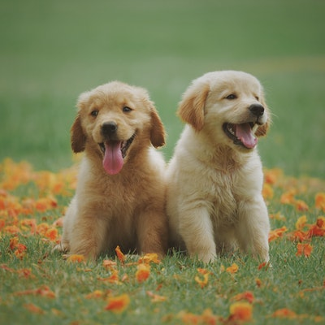

It's likely no surprise to dog owners, but growing research suggests that man's best friend often acts more human than canine. Dogs can read facial expressions, communicate jealousy, display empathy, and even watch TV, studies have shown.
Social eavesdropping or people-watching is central to human social interactions, since it allows us to figure out who's nice and who's mean.
Dogs, often hailed as humans’ best friends, have been the topic of many scientific studies looking into how they might boost our well-being. In this Spotlight, we’ll explain how your friendly pup can benefit your health across the board.
You speak dog better than you think you do. You may not be fluent; that would require actually being a dog. But if you went to live in a dogs-only world, you’d be pretty good at understanding what they’re saying.
Research on dogs has exploded in recent decades. Universities have opened canine cognition labs, and scientists have probed dogs’ intelligence, behavior, biology and skills.
I avoid using the L-word in my scientific writing. We talk about exceptional gregariousness. We talk about hypersociability. When we’re doing science, we have to find terms that can be operationalized, or things that can be measured. We can measure whether a dog chooses to go for a bowl of food or its owner when it’s separated from both food and its owner for many hours
A dog has a strong power of smell. They are more liked by people because of their faithfulness. They are intelligent, they are watchfulness. The dogs have many colors such as grey, white, black, brown and red. They are of many kinds such as bloodhound, greyhound, german shepherd, Labrador, Rottweiler, bulldog poodle, etc.
Do you think you know everything there is to know about canines? Think again! Check out these interesting facts you may have never heard:
There are more amazing things you need to kow about dogs